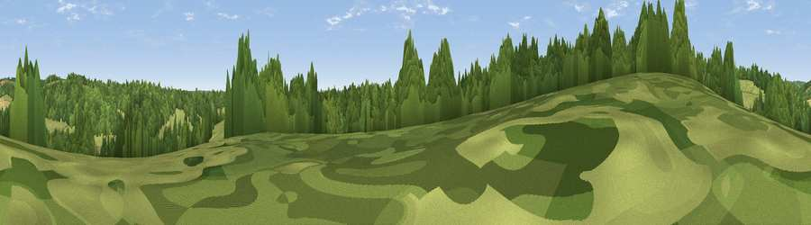

Viewpoint near Rotherfield Greys
#44043 in England · top 76% of its area beats it · near Rotherfield Greys · footpathWhere it is
The exact computed spot (SU 73925 84375). Click the marker for map links.
Public access: a public right of way passes within 50 m of this spot. Computed from Natural England's CRoW access layer and OpenStreetMap rights of way — not the legal definitive map. Always verify locally.
The view, rendered

A 360° render of this exact spot computed from the terrain model, tree cover and land cover — summer colours, afternoon light, calibrated against photographs of famous viewpoints. Real trees, hedges and buildings will differ in detail.
The panorama
Grey silhouette: terrain skyline in each direction (720 bearings, Earth curvature and refraction included). Dashed green: skyline with trees (+15 m) and buildings (+8 m) as obstacles. Blue strip: how far the ground is visible on each bearing.
Where the view opens
Wedge length = distance to the farthest visible ground on that bearing (vegetation-aware). Rings at 10, 25 and 50 km.
What fills the view
56% woodland · 34% grassland · 9% cropland ·
Angular shares of the visible panorama (visual magnitude), not map area. Landscape diversity 0.42 (0–1 Shannon).
Key numbers
More beautiful places nearby
The staircase of upgrades: each row has a higher view potential than everything closer. Driving times are estimates from straight-line distance, calibrated against real road routing — check an actual route before setting out.
| Place | Direction | Drive | Score |
|---|---|---|---|
| Viewpoint near Henley-on-Thames | ESE · 2 km | ~5 min | 23.5 |
| Viewpoint near Fawley | N · 3 km | ~7 min | 39.3 |
| Viewpoint near Fawley | N · 4 km | ~9 min | 48.8 |
| Viewpoint near Nuffield | WNW · 9 km | ~18 min | 62.3 |
| Viewpoint near Cookley Green | NNW · 9 km | ~18 min | 68.5 |
| Viewpoint near Watlington | NNW · 10 km | ~19 min | 70.6 |
| Viewpoint near Lewknor | NNW · 11 km | ~21 min | 70.8 |
| Viewpoint near Lewknor | N · 13 km | ~24 min | 74.4 |
51.55343, -0.93516 · source: screening · position refined by local search. Computed location — check access rights before visiting.